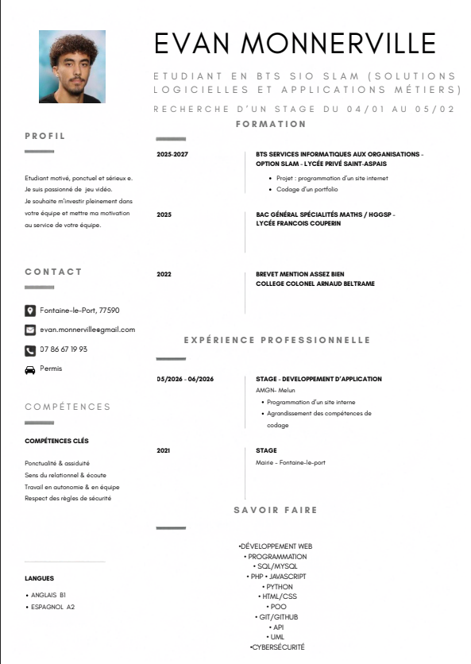

Bonjour, je suis Evan Monnerville
Étudiant en BTS Services Informatiques aux Organisations, option SLAM, au campus Saint-Aspais, je recherche un stage en développement. Ce portfolio rassemble mon parcours, mes compétences, mes projets et mes procédures.

Parcourir le portfolio
Parcours professionnel
Mon stage et mes expériences.
Compétences techniques
Langages, bases de données et outils.
Projets informatiques
Projets réalisés en BTS ou non.
Formation BTS SIO
Résumé du diplôme et des blocs de compétences.
Procédures informatiques
Mes procédures réalisées en BTS, en PDF.
Contact
Pour me joindre et récupérer mon CV.